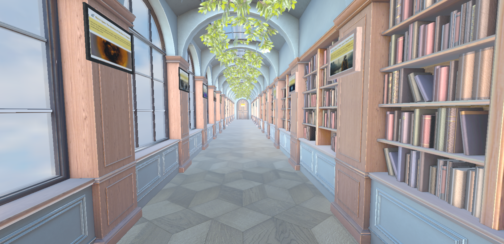
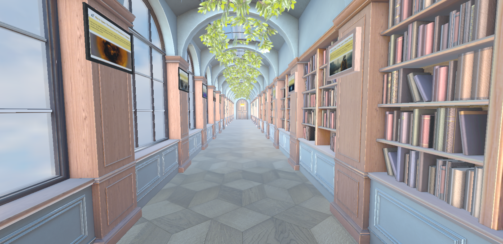

Vectorization of Papers for Semantic Search
GENERAL SUMMARY
The Complete System
PHASE 1: WEB SCRAPING
Messy HTML
→ Structured Sections
→ Clean Text
→ Validated JSON
PHASE 2: EMBEDDINGS
Clean Text
→ Tokenization
→ BERT (self-attention in 12 layers)
→ Vector of 768 numbers
→ FAISS index for fast search
RESULT:
Papers searchable by MEANING, not just exact words
Key advantage: A researcher can search for "radioresistant organisms" and find papers that talk about "DNA repair mechanisms" or "radiotolerant bacteria" even if they don't use the exact words from the search.
PHASE 1: CONTENT EXTRACTION
Objective
Convert 607 HTML/PDF publications from NASA into structured and processable data.
The Problem
Scientific papers are in web format (HTML) with variable structure:
- Different page layouts
- Inconsistent styles
- Content mixed with navigation, ads, etc.
The Solution: Intelligent Web Scraping
Input:
https://nasa.gov/publication/PMC7894523
(Full HTML page with menus, banners, etc.)
Process:
1. Identify sections using 3 strategies:
- Search for HTML tags:
<section id="abstract">, <div class="methods">
- Search for headings:
<h2>Results</h2>, <h3>Discussion</h3>
- Recognize text patterns: "ABSTRACT:", "Materials and Methods:"
2. Extract content from each section:
├── Abstract: "This study investigates..."
├── Introduction: "Microgravity environments..."
├── Methodology: "Bacterial cultures were grown..."
├── Results: "Gene expression analysis revealed..."
├── Discussion: "Our findings suggest..."
├── Conclusions: "In conclusion, we demonstrate..."
├── References: [Paper A, Paper B, ...]
└── Keywords: ["microgravity", "E. coli", "gene expression"]
3. Clean text:
- Remove residual HTML code:
<span>, <div>, <br>
- Normalize spaces: multiple spaces → a single one
- Correct special characters:
& → &
Quality Control
Each paper receives a completeness score:
| Section |
Weight |
Note |
| Abstract |
25% |
(critical) |
| Methodology |
20% |
(critical for reproducibility) |
| Results |
20% |
(critical) |
| Introduction |
15% |
|
| Discussion |
10% |
|
| Conclusions |
5% |
|
| References |
3% |
|
| Keywords |
2% |
|
Examples:
Example 1:
Complete paper with all sections → Score = 1.0 ✅
Example 2:
Paper without discussion or conclusions → Score = 0.85 ✅
Example 3:
Paper with only an abstract → Score = 0.25 ❌ (rejected)
Criterion: Only papers with a score ≥ 0.60 are processed.
Output
JSON Format:
{
"pmcid": "PMC7894523",
"title": "Effects of Microgravity on E. coli Gene Expression",
"authors": ["Smith, J.", "Johnson, A."],
"date": "2023-03-15",
"journal": "Nature Microbiology",
"sections": {
"abstract": "This study investigates how microgravity affects bacterial gene expression...",
"methodology": "E. coli cultures were grown in rotating wall vessels to simulate microgravity...",
"results": "RNA-seq analysis revealed 347 differentially expressed genes...",
"discussion": "Our findings indicate that microgravity triggers stress response pathways...",
"conclusions": "Bacteria adapt to microgravity through coordinated genetic responses..."
},
"metadata": {
"quality_score": 0.95,
"word_count": 4523
}
}
Result of Phase 1
- ✅ 607 papers extracted
- ✅ ~4,856 sections (average 8 per paper)
- ✅ Clean and validated data
PHASE 2: VECTORIZATION (EMBEDDINGS)
Objective
Convert human-readable text into numerical vectors that computers can compare mathematically.
What is an Embedding?
Simple Analogy:
Imagine a map where each word is a point. Words with similar meanings are close together:
- "bacteria" and "microorganism" → close
- "bacteria" and "rocket" → distant
In reality:
Each text is converted into a vector of 768 numbers.
Text: "Bacteria survive in microgravity"
Embedding (simplified to 5 dimensions for visualization):
[0.234, -0.567, 0.891, 0.123, -0.445]
Real: 768 dimensions
[0.234, -0.567, 0.891, ..., -0.332] (768 numbers)
Why Vectors?
Because they allow for measuring similarity mathematically:
Vector A: "bacteria in space" → [0.8, 0.2, 0.1]
Vector B: "microbes in microgravity" → [0.7, 0.3, 0.15]
Vector C: "rocket fuel composition" → [0.1, 0.9, 0.8]
Similarity (cosine):
A vs B = 0.92 → very similar ✅ (same concept)
A vs C = 0.15 → not similar ✗ (different concepts)
Model Used: S-PubMedBERT-MS-MARCO
Why this specific model?
It is an AI model trained on:
- PubMed (millions of biomedical papers) → understands scientific terminology
- MS-MARCO (Microsoft search dataset) → optimized for finding relevant information
Advantage over general models:
General model (like GPT):
Query: "thermophilic archaea"
May confuse with: "thermal architecture", "archaic themes"
S-PubMedBERT:
Query: "thermophilic archaea"
Understands: extremophilic organisms that live at high temperatures
Finds: papers about Pyrococcus, Sulfolobus, etc.
How BERT Works (Simplified)
BERT uses a mechanism called "Self-Attention".
Central idea: To understand a word, you need the context of the words around it.
Example:
Sentence: "Bacteria survive extreme radiation"
What does "survive" mean?
BERT analyzes:
- "bacteria" → WHO survives? (subject)
- "radiation" → WHAT does it survive? (object)
- "extreme" → WHAT KIND of radiation? (modifier)
Calculate "attention weights":
survive → bacteria: 45% (high attention)
survive → radiation: 40% (high attention)
survive → extreme: 15% (low attention)
Final vector for "survive" =
45% info from "bacteria" + 40% info from "radiation" + 15% info from "extreme"
Mathematical Formula (core of BERT):
Where:
- Q = Query: "What am I looking for?"
- K = Key: "What information do I have?"
- V = Value: "What information do I offer?"
- d = 64 (dimensionality, for normalization)
- softmax = function that converts numbers into probabilities (sum to 100%)
Numerical example:
The word "survive" seeks context from other words:
survive_query = [1.0, 0.5, 0.2]
bacteria_key = [0.9, 0.6, 0.1]
radiation_key = [0.8, 0.4, 0.3]
Step 1: Calculate similarity (dot product)
survive · bacteria = 1.0×0.9 + 0.5×0.6 + 0.2×0.1 = 1.22
survive · radiation = 1.0×0.8 + 0.5×0.4 + 0.2×0.3 = 1.06
Step 2: Convert to probabilities (softmax)
weight_bacteria = e^1.22 / (e^1.22 + e^1.06) = 0.54 (54%)
weight_radiation = e^1.06 / (e^1.22 + e^1.06) = 0.46 (46%)
Result:
The "survive" vector incorporates 54% of the context from "bacteria"
and 46% of the context from "radiation"
Complete Process: Text → Vector
Step 1: Tokenization
Text: "Bacteria survive extreme radiation"
Tokens: ["[CLS]", "Bacteria", "survive", "extreme", "radiation", "[SEP]"]
↑ start ↑ end
Step 2: Initial Embedding
Each token is converted into a base vector (lookup table):
"Bacteria" → [0.12, -0.34, 0.56, ..., 0.23]
"survive" → [0.45, -0.12, 0.78, ..., 0.67]
...
Step 3: Self-Attention (12 layers)
Each layer refines the vectors by incorporating context:
Layer 1: "survive" learns it is related to "bacteria" and "radiation"
Layer 2: "survive" learns the type of survival (biological, not metaphorical)
Layers 3-12: Progressive refinement of the meaning
Step 4: Aggregation (Mean Pooling)
BERT provides a vector for each word. To get a vector for the entire document:
Output of all words:
bacteria: [0.23, -0.45, 0.67, ..., 0.12]
survive: [0.34, -0.23, 0.54, ..., 0.21]
extreme: [0.12, -0.56, 0.43, ..., 0.18]
radiation: [0.45, -0.32, 0.61, ..., 0.25]
Average (mean pooling):
doc_embedding = (vector_bacteria + vector_survive + ... + vector_radiation) / 4
doc_embedding = [0.285, -0.39, 0.5625, ..., 0.19]
Final Output:
"Bacteria survive extreme radiation"
→ [0.285, -0.39, 0.56, ..., 0.19] (768 numbers)
Strategy by Sections
Not just one embedding is created per paper, but one per section:
Paper PMC7894523:
├── embedding_abstract: [0.23, -0.45, ...]
├── embedding_methodology: [0.34, -0.12, ...]
├── embedding_results: [0.56, -0.23, ...]
└── embedding_conclusions: [0.12, -0.67, ...]
Total: 607 papers × ~8 sections = 4,856 embeddings
Reason: Allows searching in specific sections
- Search for similar methodologies
- Compare only results
- Etc.
Index for Fast Searching: FAISS
Problem: With 4,856 vectors of 768 dimensions, how to search quickly?
Solution: FAISS (Facebook AI Similarity Search)
Specialized data structure:
- Indexes vectors for search in <50ms
- Uses approximations for large corpora (millions of documents)
Similarity Measurement: Cosine Similarity
Formula:
Where:
- A · B = dot product = sum(A[i] × B[i]) for all dimensions
- ||A|| = vector length = √(sum(A[i]²))
Range: -1 to 1
- 1.0 = identical vectors (maximum similarity)
- 0.5 = similar vectors
- 0.0 = perpendicular vectors (no relationship)
- -1.0 = opposite vectors
Example:
Query: "bacteria in space" → vector_q = [0.8, 0.3, 0.1]
Paper 1: "Bacterial growth in microgravity" → vector_p1 = [0.7, 0.4, 0.15]
Paper 2: "Rocket propulsion systems" → vector_p2 = [0.1, 0.2, 0.9]
Calculation:
q · p1 = 0.8×0.7 + 0.3×0.4 + 0.1×0.15 = 0.56 + 0.12 + 0.015 = 0.695
||q|| = √(0.8² + 0.3² + 0.1²) = √(0.64 + 0.09 + 0.01) = √0.74 = 0.86
||p1|| = √(0.7² + 0.4² + 0.15²) = √0.7125 = 0.84
cosine(q, p1) = 0.695 / (0.86 × 0.84) = 0.695 / 0.72 = 0.96 ✅ very relevant
cosine(q, p2) = 0.13 ❌ not relevant
The system returns Paper 1 as the main result
Result of Phase 2
- ✅ 4,856 embeddings of 768 dimensions each
- ✅ FAISS index built for search in <50ms
- ✅ Semantic search: finds similar concepts even if the words are different


 
